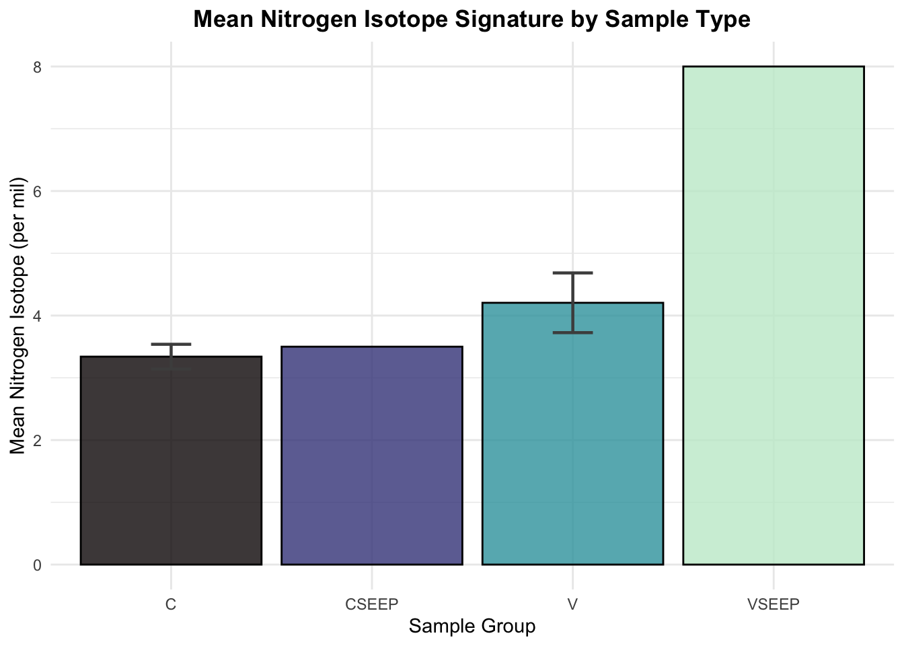
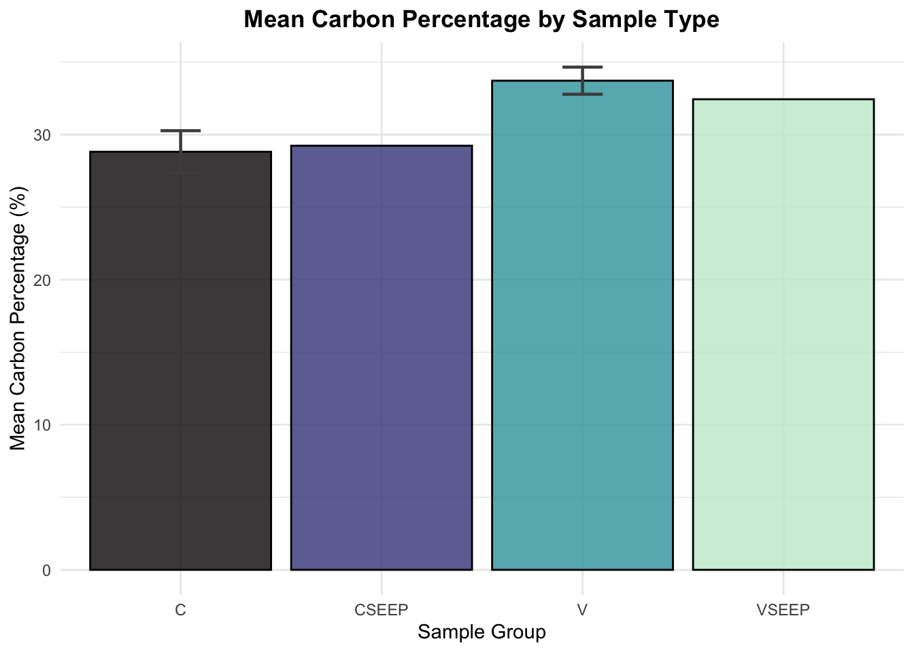

library(tidyverse)
library(here)
# Load the data file (Turb_NC.csv)
data <- read_csv(here("Week_10", "Data", "Turb_NC.csv"))
# Data preparation: Extract the sample type (e.g., 'C' or 'V') from CowTagID. This is our grouping factor for the study
data <- data %>%
mutate(
Sample_Type = str_extract(CowTagID, "^[A-Z]+"),
)Making Functions
Week_10_HW
Introduction
This document contains two custom R functions for initial visualization of my final project data.
A non-plotting function (summarize_data_by_group) for calculating simple summary statistics (mean and standard deviation) on any column.
A plotting function (plot_group_means) that creates a basic bar chart comparing group means
Both functions are demonstrated with two examples to show flexibility across different columns and grouping factors.
Setup and Load Data
Function 1
The summarize_data_by_group function calculates the sample size, mean , and standard deviation for any numeric column, grouped by any factor you specify
data: A data frame.
group_col: The name of the grouping column (e.g., “Sample_Type”) as a string.
var_col: The name of the numeric column to summarize (e.g., “del15N”) as a string.
return: A new data frame with N, Mean, and SD.
summarize_data_by_group <- function(data, group_col, var_col) {
# Making sure the grouping column is treated as a factor for correct summarizating
data[[group_col]] <- as.factor(data[[group_col]])
summary_df <- data %>%
group_by(.data[[group_col]]) %>%
summarise(
N = n(),
Mean = mean(.data[[var_col]], na.rm = TRUE),
SD = sd(.data[[var_col]], na.rm = TRUE),
.groups = 'drop'
) %>%
# Rename the grouping column in the output for clarity
rename("Group" = all_of(group_col))
return(summary_df)
}Example 1: Summarize del15N by sample site
summarize_data_by_group(data, "Sample_Type", "del15N")# A tibble: 4 × 4
Group N Mean SD
<fct> <int> <dbl> <dbl>
1 C 20 3.34 0.198
2 CSEEP 1 3.5 NA
3 V 20 4.20 0.480
4 VSEEP 1 8 NA Example 2:
summarize_data_by_group(data, "Sample_Type", "C_ug")# A tibble: 4 × 4
Group N Mean SD
<fct> <int> <dbl> <dbl>
1 C 20 739. 44.9
2 CSEEP 1 747. NA
3 V 20 862. 35.7
4 VSEEP 1 808. NA Function 2
The plot_bar_means function takes the output of the summary function above and creates a bar plot of group means with SD error bars
summary_data: A data frame outputted by the summarize_data_by_group function.
y_label: The label for the y-axis (as a string).
title: The plot title (as a string).
return: A ggplot object.
plot_group_means <- function(summary_data, y_label, title) {
p <- ggplot(summary_data, aes(x = Group, y = Mean, fill = Group)) +
# Draw the bar for the mean value
geom_col(color = "black", alpha = 0.8) +
scale_fill_viridis_d(option = "mako", end = 0.95) +
# Add error bars for Standard Deviation (SD)
geom_errorbar(
aes(ymin = Mean - SD, ymax = Mean + SD),
width = 0.2, # Width of the horizontal lines on error bars
linewidth = 0.8,
color = "gray30"
) +
labs(
title = title,
x = "Sample Group",
y = y_label,
fill = "Group"
) +
# Simple, clean theme
theme_minimal() +
theme(
legend.position = "none",
plot.title = element_text(hjust = 0.5, face = "bold")
)
return(p)
}Example 1:
# 1. Summarize the data first
del15n_summary <- summarize_data_by_group(data, "Sample_Type", "del15N")
# 2. Plot the summary
plot_group_means(del15n_summary,
y_label = "Mean Nitrogen Isotope (per mil)",
title = "Mean Nitrogen Isotope Signature by Sample Type")
Example 2:
# 1. Summarize the data first
c_percent_summary <- summarize_data_by_group(data, "Sample_Type", "C_percent")
# 2. Plot the summary
plot_group_means(c_percent_summary,
y_label = "Mean Carbon Percentage (%)",
title = "Mean Carbon Percentage by Sample Type")
Ta Daaaaa!